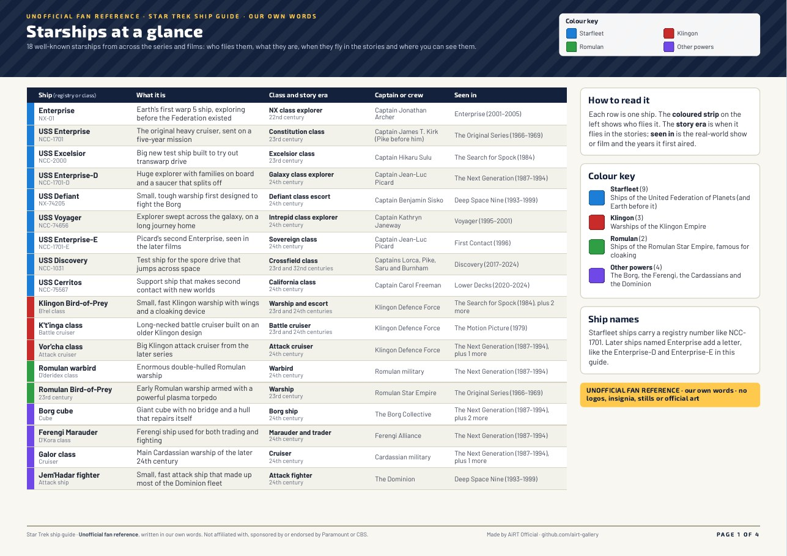
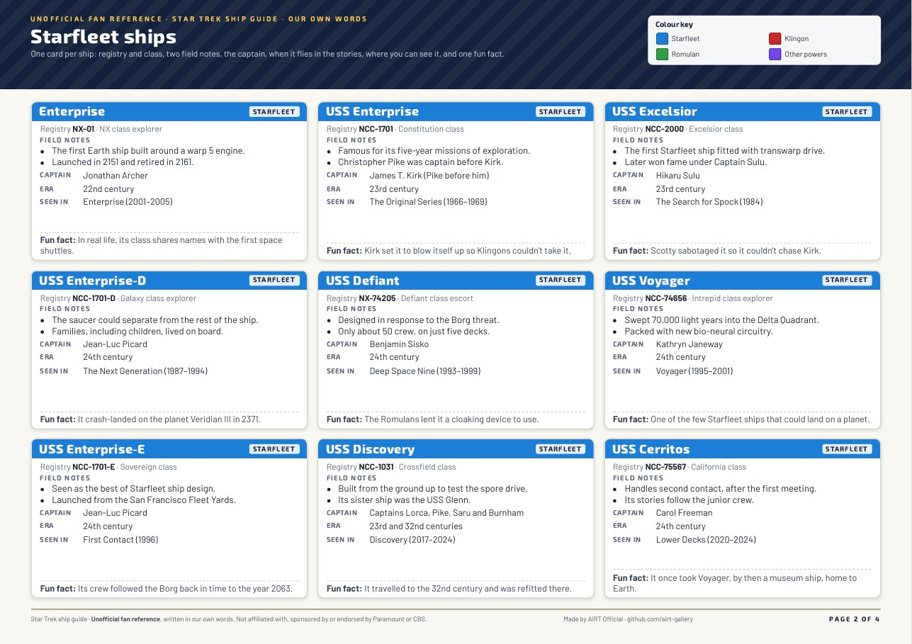
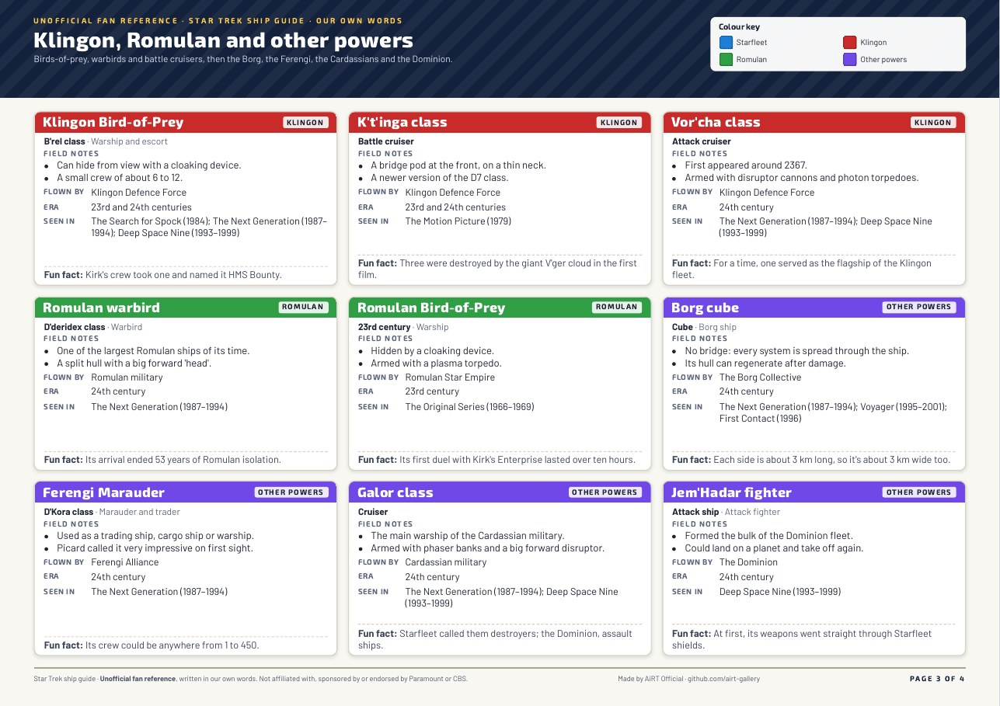
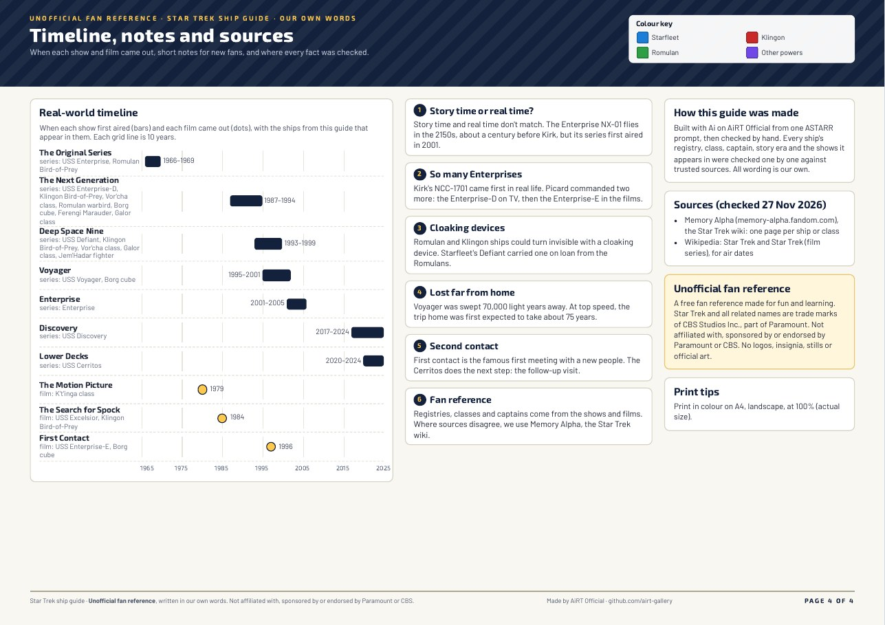

The four pages








Print it
Print the PDF in colour on A4, landscape, at 100% (actual size). Page 1 makes a handy sheet for the next family viewing night.
How it was made
Built with Ai on AiRT Official from one ASTARR prompt, then every fact checked against Memory Alpha and Wikipedia (see SOURCES.md). The prompt is in the GitHub repo.
Fan reference
An unofficial fan reference. Star Trek and all related names are trade marks of CBS Studios Inc., part of Paramount. Not affiliated with, sponsored by or endorsed by Paramount or CBS. No logos, insignia, stills or official art.